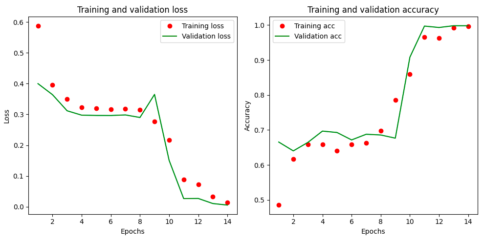

In this post I'll show how to setup a Keras work flow for discrimination of certain kind of shapes. First let's see (very briefly) what we are talking about.
The Problem
_2014-02.jpg)
Let's say we want to investigate Nature at a microscopic scale. Quantum Mechanics is the theory we want to use when dealing with atoms, electrons, nuclei. It is a very well established theory, about a hundred years old, and superbly successful. Quantum Mechanics states that microscopic entities are not really localized, rather they are described via a so called wave-function. The wave-function can do all sort of weird things, like tunnel through barriers, or be in a superposition of different states. It is the case of the famous Schrödinger's cat paradox. Whenever an observation is made, the wave-function collapses in one of the states, for example dead or alive cat.
However this mechanism is not really satisfying from a theoretical point of view: it does not come from some fundamental assumption, moreover it is not clear the boundary between microscopic and macroscopic world. At what point a group of molecules stop behaving in this way for example? Different theories have been put forward. Long (very long) story short, these theories predict emission of spontaneous radiation, which scientists are looking for in the underground labs as in the picture above.
For this we are using a particular radiation detector, which is based on germanium crystal with very high purity. Germanium is a semiconductor, just like silicon, and in certain conditions and arrangements, it produces electric pulses when its volume is hit by an energetic photon.
Now, the problem here is that we want to classify the pulses in:
- Good Pulses: these are events generated by a single photon
- Multi-Event Pulses: it can happen multiple photons from different processes are generate, they should be discarded
- Noise Pulses: these come purely from electronic noise and show be discarded as well.
Let's generate some synthetic pulses to show how they look like:
# generating the data
import math
from scipy import special
from scipy.stats import norm
import colorednoise as cn
MovAvg= 40
xplt = np.arange(0,924+MovAvg-1,1)
x = np.arange(0,924,1)
tail = norm.pdf(xplt,200,50)
y_np = []
label = []
# good shapes
for i in range(0,1000):
center = np.random.normal(300,10)
y = (special.erf((xplt-center)/70)+1)/2
decrease = []
scale=abs(np.random.normal(5,10))
scalenoise=abs(np.random.normal( 1,2 ) )
for k in range(0,len(x)):
if k < center:
decrease.append( tail[k]*scale )
else:
decrease.append(-0.0001*k + (0.0001*center))
decrease = np.array(decrease)
noise = abs(np.random.normal(0,0.05))
y = y + 0.01*scalenoise*cn.powerlaw_psd_gaussian(1, 924+MovAvg-1)
ycnv=np.convolve(y, np.ones(MovAvg)/MovAvg, mode='valid')
ycnv = ycnv + decrease
y_np.append( ycnv )
label.append( np.array([1,0,0]) ) # good shapes
# bad shapes
for i in range(0,1000):
noise = abs(np.random.normal(0,0.05))
y = cn.powerlaw_psd_gaussian(1, 924+MovAvg-1)
ycnv=np.convolve(y, np.ones(MovAvg)/MovAvg, mode='valid')
massimo = max(ycnv)
minimo = min(ycnv)
yappend = [(i-minimo )/(massimo - minimo ) for i in ycnv]
y_np.append( yappend )
label.append( np.array([0,0,1]) ) # bad shapes
# double shapes
for i in range(0,1000):
center = np.random.normal(300,10)
shift = 100
y = (special.erf((xplt-center)/35)+1)/4 + (special.erf((xplt-(center+shift))/35)+1)/4
decrease = []
scale=abs(np.random.normal(5,10))
scalenoise=abs(np.random.normal( 1,2 ) )
for k in range(0,len(x)):
if k < center:
decrease.append( tail[k]*scale )
else:
decrease.append(-0.0001*k + (0.0001*center))
noise = abs(np.random.normal(0,0.05))
y = y + 0.01*scalenoise*cn.powerlaw_psd_gaussian(1, 924+MovAvg-1)
ycnv=np.convolve(y, np.ones(MovAvg)/MovAvg, mode='valid')
ycnv = ycnv + decrease
y_np.append( ycnv )
label.append( np.array([0,1,0]) ) # double shapes
label = np.array(label)
y_np = np.array(y_np)
Quick explanation on this ones. First of all, the pulses look like sigmoid or error functions, so we just start using (special.erf(x)+1)/2 so that it is always positive in its domain, with its centre and width adjusted to match the data.
For the Multi-Event ones, we just sum two slightly shifted.
The noise events and the noise inside the other two is a flicker noise which can be conveniently generated from the nice "colorednoise" package. Here below some examples, which are normalized to one for convenience. The scale of the noise is also random, to make sure the model is robust to a certain degree against that.
Now, the problem here is that we have so many pulses, that discriminate them one by one would take a very long time. Of course there is always an algorithmic solution, however this has typically to many parameters to fine-tune, plus we want to use this occasion for some good ML.
Solution with Keras
from tensorflow import keras
from keras.preprocessing import sequence
from keras.models import Sequential
from keras.layers import Dense, Dropout, Activation, Conv1D, GlobalMaxPooling1D, Embedding, Input
from keras.datasets import imdb
# from keras.utils import plot_model
from keras import optimizers
import matplotlib.pyplot as plt
import numpy as np
# Graphic output
from IPython.display import SVG
from keras.utils.vis_utils import model_to_dot
from sklearn.model_selection import train_test_split
# python3.7
# tested with:
# Name: keras
# Version: 2.6.0
# Name: tensorflow
# Version: 2.6.2
This are just the basic import for some good ML. For the training and validation we are going to use the 3k shapes generated above. Let's split in training and validation, and 'label' contains the true classification (we know cause we made them!).
X_train, X_test, y_train, y_test = train_test_split(y_np, label, test_size=0.33)
X_train=np.array(X_train,None)
Now we have to specify the architecture of the Convolutional NN. It will take as input a vector which represents the pulse. We can think about it as a one-dimensional image. Then we apply some convolutional layers, three in this example, and will end up with a classic neural network for the classification. The last layer is made out of three neurons, each one will specify a probability for the different classes.
print('Build model...')
model = Sequential()
model.add(Input(shape=(924,1)))
model.add(Conv1D(filters=64,
kernel_size=5,
padding='valid',
activation='relu',
strides=1,
data_format="channels_last"
))
model.add(Conv1D(filters=64,
kernel_size=5,
padding='valid',
activation='relu',
strides=1,
data_format="channels_last"
))
model.add(Conv1D(filters=64,
kernel_size=5,
padding='valid',
activation='relu',
strides=1,
data_format="channels_last"
))
model.add(GlobalMaxPooling1D())
model.add(Dense(200))
model.add(Activation('relu'))
model.add(Dense(100))
model.add(Activation('relu'))
model.add(Dense(3, activation='sigmoid'))
model.compile(loss='binary_crossentropy',
optimizer='adam',
metrics=['accuracy'])
model.summary()
Now it's already time for the training:
history = model.fit(X_train, y_train,
batch_size=32,
epochs=14,
validation_data=(X_test, y_test))
This step should take a while. The number of epochs tells us how many iterations we are going to have. It should not be too large or we risk the model to over-fit. Finally, let's have a look at how was the training, and if our architecture actually learned something
history_dict = history.history
history_dict.keys()
val_loss = history.history['val_loss']
loss = history.history['loss']
accuracy = history.history['accuracy']
val_accuracy = history.history['val_accuracy']
epochs = range(1, len(accuracy) + 1)
plt.rcParams['figure.figsize'] = [10, 5]
plt.subplot(1, 2, 1)
plt.plot(epochs, loss, 'bo', label='Training loss', color='red')
plt.plot(epochs,val_loss , 'b', label='Validation loss', color='green')
plt.title('Training and validation loss')
plt.xlabel('Epochs')
plt.ylabel('Loss')
plt.legend()
plt.subplot(1, 2, 2)
plt.plot(epochs, accuracy, 'bo', label='Training acc', color='red')
plt.plot(epochs, val_accuracy, 'b', label='Validation acc', color='green')
plt.title('Training and validation accuracy')
plt.xlabel('Epochs')
plt.ylabel('Accuracy')
plt.legend()
plt.tight_layout()
# plt.show()
plt.savefig("ML/training.png")
model.save("ML/begemodel")

Here the left plot shows, for each epoch, how "close" the parameters are to the global minimum, or better how much they are moving towards it. If the loss is small, we are close enough. The right plot instead shows the accuracy. This is obtained comparing the prediction against the "truth" which we fed to the system. We can see that between 3 and 8 epochs, the accuracy was stable around 0.7. This is because the model did learn to discriminate noise vs all the other stuff, but not single and multi-event shapes. However, some more training and the problems is solved, as accuracy reaches around 100%.
We can save the model to retrieve it for later without the need of re-training
model.save("my_model")
...
model=keras.models.load_model("my_model")
prediction = model.predict(candidates)
Where the last line tells the model to make its prediction to a set of candidates (candidates is a np array). Here below some example of our mode applied to real-life data:
Conclusion
This post shows how to setup a very simple model using convolutional neural nets for classification of pulses from germanium detectors. Works like a charm! Even if usually time-series are better described by recurrent neural networks, in this case the shapes have well defined behaviours and probably the convolutional approach works best. For a more in-depth reading of Deep Learning on germanium detectors, a nice article can be found here, in this case using variational autoencoders.